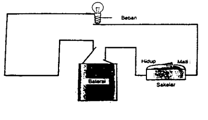
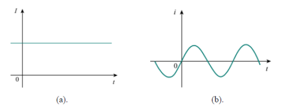
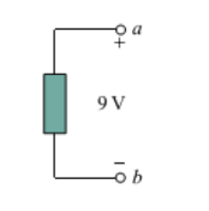
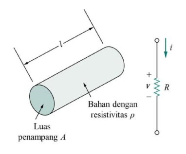
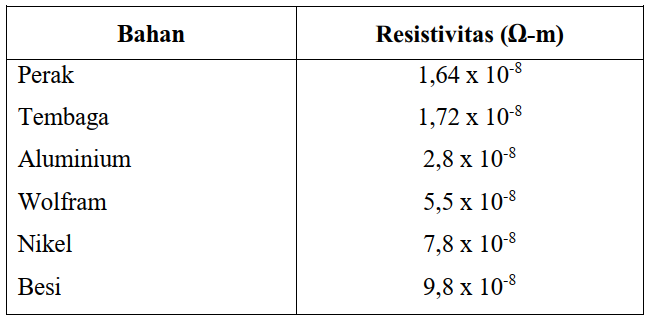

Konsep pertama yang yang harus dipahami ialah tentang arus listrik. Buatlah susunan eksperimen sederhana seperti yang diperlihatkan pada Gambar 1.1 menggunakan baterai, bola lampu, sakelar dan sedikit kawat penghubung.
Baterai berfungsi sebagai sumber tenaga listrik dan bola lampu berfungsi sebagai beban listrik. Agar hubungan beban listrik dapat dihidupkan atau dimatikan, maka dalam rangkaian harus dipasang sebuah sakelar. Dengan sakelar itu rangkaian dapat dibuka atau ditutup setiap saat.
Ketika suatu konduktor, misalnya kabel yang tersusun dari atom-atom terhubung dengan sumber listrik, misalnya baterai, muatan akan bergerak. Arah pergerakan muatan saling berlawanan. Pergerakan muatan ini kemudian menimbulkan adanya arus pada satu aliran tertutup.
Besaran listrik yang memungkinkan tenaga dibawa dari sumber listrik ke tempat beban listrik dinamakan arus listrik. Kekuatan arus ini (simbol I atau i) ditentukan oleh banyaknya muatan (Q) yang melalui penampang lintang suatu pengantar dalam satu detik
$$I=\frac{Q}{t}$$dengan :
$I$ : arus dalam ampere ($A$)
$t$ : waktu dalam detik (det) atau sekon (s)
$Q$ : muatan listrik dalam coulomb ($C$)
Disebutkan oleh Robert Andrews Milikan (1863-1953), bahwa muatan pada sebuah elektron adalah $-1,602 \times 10^{-19} C$, sementara muatan pada sebuah proton berharga $-1,602 \times 10^{-19} C$. Jika jumlah elektron dan proton sama dalam satu atom, maka atom akan bersifat netral. Dalam satu Coulomb muatan, terdapat $1/(1,602 \times 10^{-19} C) = 6,24 \times 10^{18}$ elektron.
Dari persamaan di atas, arus 1A dapat dihitung :
$$I = \frac{Q}{t}$$ $$1A = 1 \times \frac{C}{s}$$ $$= 1 \times \frac{6,24 \times 10^{18}}{1}$$ $$= 6,24 \times 10^{18}$$Jadi, arus 1 ampere berarti bahwa dalam satu detik bergerak kurang lebih $6,24 \times 10^{18}$ elektron melalui penampang lintang sebuah penghantar. Untuk arus yang sangat lemah saja, jumlah elektron yang mengalir sudah tidak dapat dibayangkan besarnya. Dengan alas an ini, maka arus tidak diukur dalam elektron tiap detik, melainkan dalam ampere (A), yang menyatakan banyaknya muatan yang mengalir dengan laju 1 C/s. Nama ampere diambil dari nama seorang ahli fisika Perancis Andre Marie Ampere (1755-1836).
Arus memiliki polaritas, yaitu positif dan negatif. Polaritas ini terkait dengan pergerakan arus yang terjadi akibat pergerakan elektron. Misalkan arus sebesar 5 A mengarah pada satu arah tertentu, maka arus sebesar $-5 A$ berarti arus 5 A bergerak berlawanan.
Arus yang polaritas nilainya tetap (positif saja atau negatif saja) terhadap waktu dikatakan sebagai arus searah (direct current, dc). Arus yang polaritasnya berubah-ubah terhadap waktu disebut sebagai arus bolak-balik (alternating current, ac).
Gambar di atas merupakan contoh gambar arus searah (a) dan arus bolak-balik (b)
Arus searah biasanya dituliskan dalam huruf kapital $I$, sedangkan arus bolak-balik dituliskan dalam huruf kecil $i$ dalam perhitungannya.
Tegangan adalah energi yang dibutuhkan untuk memindahkan sejumlah muatan dari satu titik ke titik lainnya melalui suatu elemen listrik. Tegangan bisa dikatakan pula sebagai beda potensial. Beda potensial adalah perbedaan muatan yang terdapat pada dua titik yang berbeda. Syarat utama tegangan adalah adanya dua titik, artinya tegangan selalu diukur terhadap dua titik yang berbeda. Salah satu titik dijadikan acuan atau referensi, sedangkan titik yang satunya adalah relatif terhadap titik referensi.
Secara matematis, tegangan $v_{ab}$ adalah besarnya perubahan energi yang dibutuhkan untuk memindahkan sejumlah muatan dari titik $a$ ke $b$.
$$v_{ab}=\frac{dW}{dq}$$Tegangan diukur dalam satuan volt (V), sedangkan w adalah energi yang diukur dalam satuan joule (J) dan q adalah muatan dalam satuan Coulomb (C). Satuan volt digunakan untuk menghargai Alessandro Antonio Volta (1745-1827) yang telah menemukan sel baterai voltaik pertama.
Material secara umum memiliki sifat menghambat aliran muatan listrik, yang disebut resistansi dan dinotasikan dengan $R$. Resistansi suatu bahan dengan luas permukaan sama $A$ dan panjang $l$, adalah :
$$R=\rho \frac{t}{A}$$dimana $\rho$ disebut resistivitas bahan yang diukur dalam satuan ohm-meter. Konduktor yang baik, misalnya tembaga dan alumunium, memiliki resistivitas yang rendah. Insulator yang baik, misalnya mika dan kertas, memiliki resistivitas tinggi. Material yang memiliki kecenderungan menghambat arus listrik disebut sebagai resistor atau tahanan.
Tabel resistivitas bahan dalam ohm-meter
Satuan resistansi adalah ohm (biasanya disingkatkan dengan huruf omega besar) yang diambil dari nama ahli fisika Jerman George simon Ohm 1787-1854. Simbol untuk resistansi adalah R